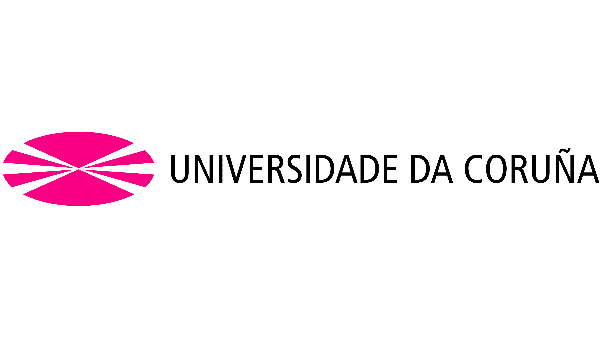

Master en investigacion quimica y quimica industrial
Este master lo relice en la universidad de la coruña, España 2017-2018
Los distintos aspectos cubierto en el mismo del mismo se listan a continuacion
- Modulo Máster: Selección y Validación de Metodologías Analíticas
- Modulo Máster: Cromatografía y Técnicas Analíticas de Separación
- Modulo Máster: Sistemas de Gestión en la Industria Química
- Modulo Máster: Técnicas de Preparación de Muestras complejas
- Modulo Máster: Técnicas de Caracterización de Materiales
- Modulo Máster: Determinación Estructural Avanzada
- Modulo Máster: Procesos Industriales y Sostenibilidad
- Cursos: Cromatografia Liquida(HPLC)
- Curso: Disolución De comprimido en la industria Farmacéutica